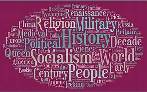

NGO have a long history in India. In the past, people in this country have been found to have provided help to others in trouble. Since centuries there exists the tradition of voluntary service to the needy and helpless in the country. In the beginning, these services were rendered by people motivated by their religious feelings. They believed that service to people would be the service to God and, therefore, would be a means to attain spiritual salvation and sometimes to atonement for any sinful act. Spirit of charity and altruism guided the voluntary action in the past, which had found expression in diverse forms even outside the formal established religious channels ( Punalekar, 2004: 33). Many people including rulers have trod the path of service to their fellow beings and adopted it as their life mission (ibid.).Floods, fires, earthquakes, epidemic outbreaks and other kinds of calamities were the occasions which motivated people to voluntary help those who were trapped in disastrous situations. Community life was very strong and people were guided by the ‘we’ feeling and selflessness in extending their individual support. The help and support used to be individual, spontaneous and transitory. It is around the late 18th and early 19th century that associations and organizations were being formed to render such activities in a more organized and permanent profile (ibid.). The reform movements of the 19th century were perhaps the first organized forms of voluntary action in the service of society. This was the period when the caste rigidities were strong, untouchability was in practice, and other social evils like child marriage, cursed status of widow’s were prevalent in the Indian society against which voluntary organizations came forward to launch reform movement.He, along with his war against the British rule, wanted to eliminate the social evils and awaken the people of India to come out of the closed shell of the evil traditions like untouchability, caste segregation, and subservience to the landholding castes and general backwardness.In order to achieve these goals, several VOs were formed under the influence of the ideals of Gandhiji. A few of them are Sewa, Eklavya, Disha etc., which were instituted in Gujarat and some others might have been formed in other states also. A significant growth of NGOs started after India achieved independence. Democracy was established and people had started understanding the meaning of freedom of speech, the charm of equality and the value of humanity and brotherhood. Also, on the other hand, the government started planning for development and in this effort, launched inter alia the schemes of Community Development Programme and later on the Green Revolution.
